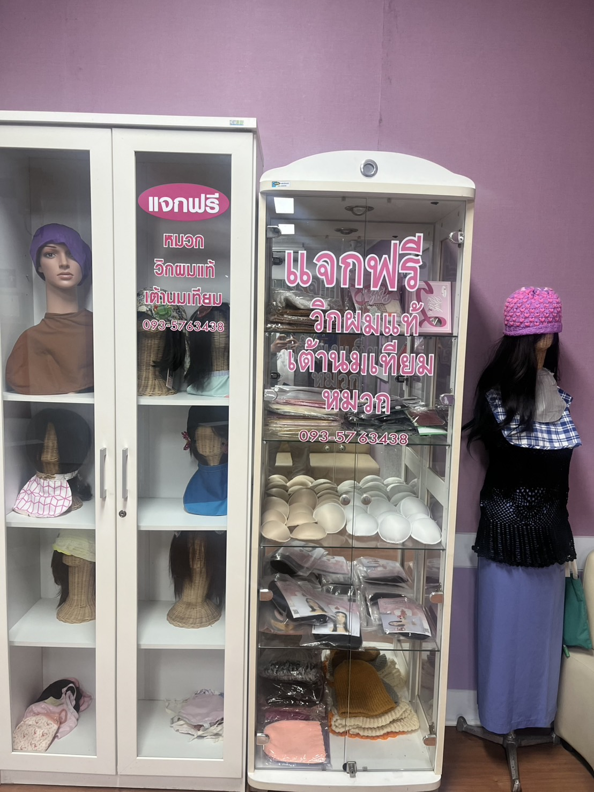
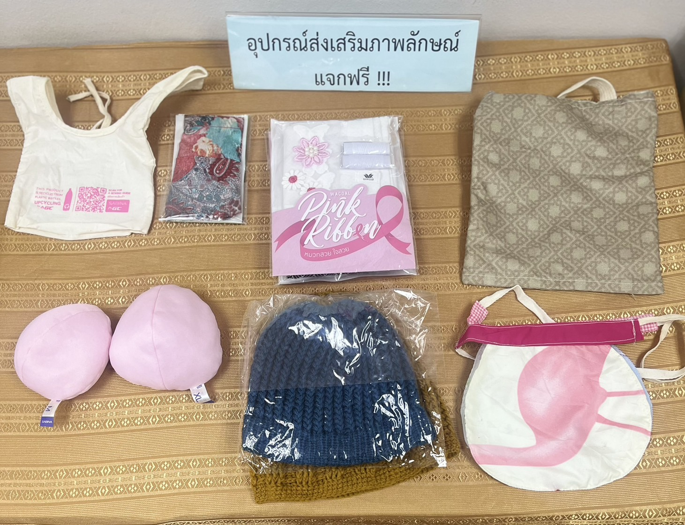
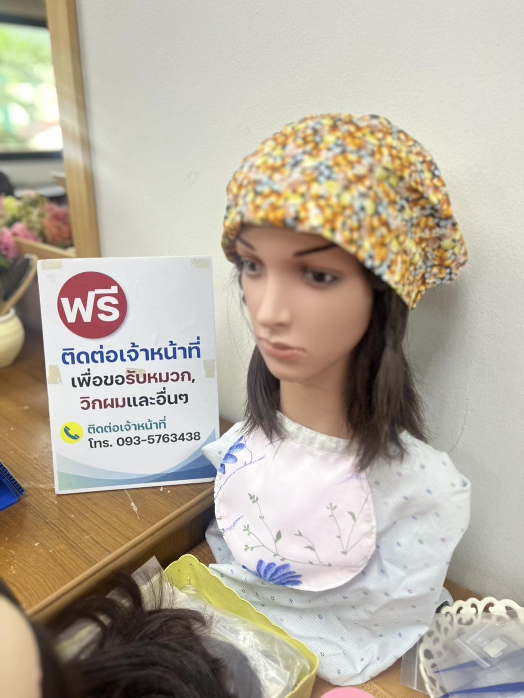

🎥 วิดีโอแนะนำการทำความสะอาดวิกผม
ขั้นตอนการดูแลวิกผม
- ใช้แชมพูอ่อนหรือน้ำยาสำหรับวิก
- ล้างด้วยน้ำเย็น
- ซับน้ำด้วยผ้านุ่ม ห้ามบิด
- ตากในที่ร่ม
- หวีด้วยหวีซี่ห่างเมื่อแห้ง
ภาพบรรยากาศการให้บริการ



บริการวิกผม เต้านมเทียม และการดูแลหลังผ่าตัด